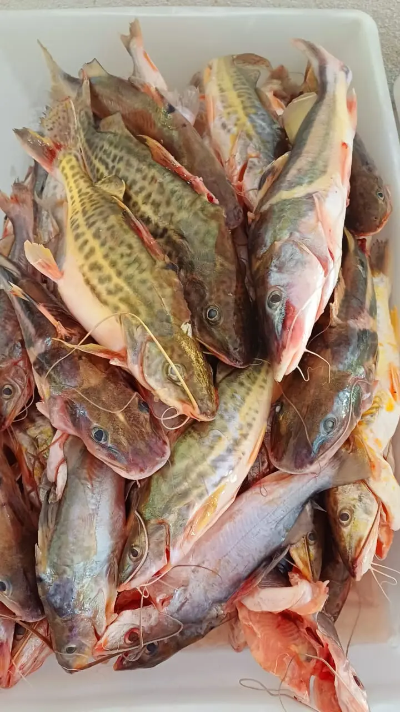

Bagre
Pimelodus maculatus
Produto vendido exclusivamente inteiro.
Consultar Preço e EncomendarRetire na loja: R. Bom Jardim, 379 — Centro, Cáceres.
Bagre: O Clássico Peixe de Couro das Águas do Rio Paraguai
O Bagre (Pimelodus maculatus) é um dos peixes de couro mais tradicionais e populares da bacia do Rio Paraguai. Assim como o Pintado e o Jurupensem, ele não possui escamas — sua pele lisa facilita a limpeza e o preparo. De porte compacto, pesando geralmente entre 400g e 2 quilos, o Bagre é encontrado com grande frequência nas águas do Pantanal mato-grossense, onde habita tanto os trechos de correnteza quanto as lagoas e remansos que se formam durante a época de cheia. É um peixe onívoro e adaptável, capturado há séculos pelos ribeirinhos e pescadores artesanais que abastecem o mercado local de Cáceres.
A carne do Bagre é branca, levemente firme e possui uma característica que os cozinheiros regionais valorizam muito: a capacidade de absorver intensamente os temperos durante o cozimento. Em um caldo bem apurado com tomate, pimentão, cebola, coentro e pimenta-de-cheiro, a carne do Bagre incorpora todos os aromas da panela, resultando em um prato de sabor profundo e reconfortante. O teor moderado de gordura também contribui para um caldo naturalmente encorpado e dourado — sem precisar de nenhum espessante. Essa sinergia entre a carne e o tempero é o motivo pelo qual o Bagre tem presença certa nas cozinhas pantaneiras mais tradicionais.
Sua versatilidade vai além do caldo. O Bagre inteiro frito em óleo bem quente é um petisco muito apreciado nas margens do rio e nas feiras locais: a pele fica crocante e dourada enquanto o interior se mantém macio e suculento. No ensopado de panela de pressão, as postas se soltam naturalmente do espinho central, facilitando o consumo e tornando o prato acessível a toda a família. Para moquecas e caldeiradas mais elaboradas, ele também se sai muito bem — a carne não desmancha com o cozimento prolongado, mantendo textura e aparência no prato.
Na Peixaria Rio Paraguai, o Bagre é comercializado exclusivamente inteiro e fresco, capturado por nossos pescadores parceiros diretamente no Rio Paraguai. A disponibilidade pode variar conforme a época do ano e o período da piracema, por isso recomendamos consultar o estoque do dia pelo WhatsApp antes de vir até a loja. Trabalhamos sempre dentro das normas de pesca regulamentada pelo Estado de Mato Grosso, garantindo um produto de procedência responsável e sabor autêntico do Pantanal.